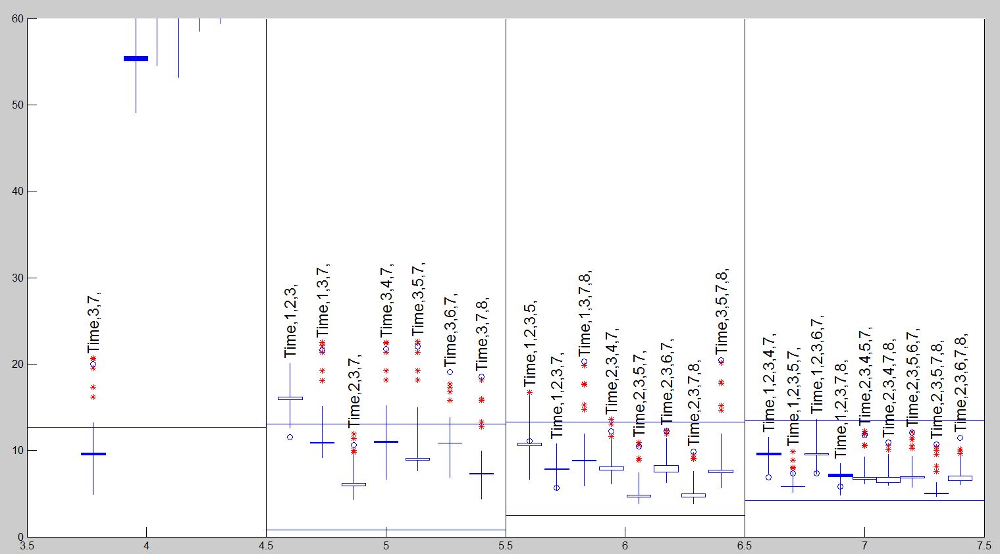

| Flexible Statistics Data Analysis Toolbox™ |
|
Robust model selection using flexible trimming in linear regression
[outms] = FSRms(y,X)
[outms] = FSRms(y,X,param1,val1,param2,val2,...)
FSRms(y,X) gives in structure outCp Mallows Cp monitored for all specified model of size smallp
y is a vector of length n containing the response values, while X is the n-by-p-1 matrix which contains (in the columns) the values of p-1 predictive terms
[out] = FSRms(y,X) returns the following information
stor − k-by-9 matrix containing statistics
which can be used to create the candles
1st col: max Cp values
2nd col: min Cp values
3rd col: average Cp values
4nd col: median Cp values
Remark: the information in the first 4 columns is referred to the central part of the search
5th col: x coordinates (or size of submodel)
6th col: number of explanatory variables of the submodel
7th col: y coordinate of final Cp
8th col: units entering the final step of the search
9th col: maximum Cp value during the (central and final
part of the) search (This information is used to print the
labels on top of each model)
outl − r-by-4 matrix containing information about 'influential
units' or empty matrix
Influential units in this context are defined as the units
which enter the subset in the final part of the search and
bring the value of Cp below the minimum or above the
maximum value of the central part of the search
1st col: x coordinates
2nd col: y coordinates
3rd col: step of entry into subset
4nd col: unit number
If matrix outl contains more columns they are ignored
siz − vector of length 2 containing information about n (number of
units of the sample and bigP, number of explanatory
variables, including the constant, in the full model).
REMARK: This
information is necessary to compute the envelopes.
MAL − (n-init+1) x (k+1) matrix Mallows Cp monitored along the search for the selected models 1st col is fwd search index 2nd col is associated with first selected model 3rd col is associated with second selected model ............ (k+1)th col is associated with k-th selected model Notice that k<=(n choose smallp) and that all models contain the constant
LAB − cell array of strings of length k containing the labels of the models which have been extracted. First element of LAB is associated with second column of matrix MAL Last element of LAB is associated with last column of matrix MAL
[out] = FSRms(y,X,param1,val1,param2,val2,...) specifies one or more of the name/value pairs described in the following table.
| Parameter | Value |
|---|---|
| 'intercept' |
If 1, a model with constant term will be fitted (default) else no constant term will be included. |
| 'nocheck' |
Scalar. If nocheck is equal to 1 no check is performed on matrix y and matrix X. Notice that y and X are left unchanged. In other words the additional column of ones for the intercept is not added. As default nocheck=0. |
| 'h' |
The number of observations that have determined the least trimmed squares estimator. The default value of h is [(n+p+1)/2] |
| 'lms' |
Scalar. If lms=1 (default) Least Median of Squares is computed, else Least trimmed squares is computed. |
| 'nsamp' |
Number of subsamples which will be extracted to find the robust estimator. If nsamp=0 all subsets will be extracted. They will be (n choose p). Remark: if the number of all possible subset is smaller than 1000 the default is to extract all subsets otherwise just 1000. |
| 'init' |
Scalar which specifies the initial subset size to start monitoring the required quantities,
if init is not specified it will be set equal to
|
| 'smallpint' |
vector which specifies which submodels (number of variables) must be considered. The default is to consider all models from size 2 to size bigP-1. In other words, as default, smallpint=(bigP-1):-1:2. When smallpint=2 all submodels including one explanatory variable and the constant will be considered. When smallpint=3 all submodels including two explanatory variables and a constant will be considered. .... |
| 'labels' |
cell array of strings of length bigP-1 containing the
names of the explanatory variables. If labels is a missing
value the following sequence of strings will be
automatically created for X |
| 'fin_step' |
vector with two elements.
The first element specifies the initial step of the search
which has to be monitored to choose the best models as
specified in scalar first_k below. The second element
specifies the ending point of the central part of the
search. This information will be used to create the
candlestick Cp plot.
If the elements of fin_step are integers greater or equal 1
they refer to the number of steps. For example if
fin_step=[10 3] the program considers the last 10 steps to
choose the best models and the central part of the search
is defined up to step n-3.
If the elements of fin_step are real numbers alpha ( |
| 'first_k' |
scalar which specifies the number of best models to consider in each of the last fin_step. For example if first_k=5 in each of the last fin_step, the models which had the 5 smallest values of Cp are considered. As default first_k=3. |
| 'ignore' |
scalar. If ignore=1, when dealing with p explanatory
variables, the submodels of the models with p+1
explanatory variables which were considered irrelevant
according to option ExclThresh, are not considered. |
| 'ExclThresh' |
scalar which has effect only if ignore=1. Exclusion threshold associated to the uppper percentage point of the F distribution of Cp which defines the threshold for each p declaring models as irrelevant. The default value of ExclThresh is 0.99999 that is the models whose minimum value of Cp in the part of the search defined by fin_step is above ExclThresh are stored for each p. If option ignore=1, the submodels with p-1 explanatory variables which are contained inside the models considered irrelevant are not considered |
| 'plots' |
scalar. If plots=1 a candlestick Cp plot is created on the screen else (default) no plot is shown on the screen 0 |
| 'steps' |
vector which specifies in which steps of the plot which
monitors Cp (AIC) it is
necessary to include the labels of the models which have been
previously chosen. The default is to write the labels of
the models in steps round([n*0.5 n*0.8 n]);.
|
| 'meanmed' |
specfy how to construct the boxes of the candles. If meanmed=1 boxes are constructed using mean and median else using the first and third quartile. |
| Remark: the options below only work if plots=1 | |
| 'rl' |
scalar which specifies the spread of the candles around each integer value defining the size of the submodels For example if rl=0.4 for each smallp candles are spread in the interval [smallp-rl smallp+rl]. The default value of rl is 0.4. rl does not have to be greater than 0.45 otherwise the candles overlap |
| 'quant' |
vector containing quantiles for the horizontal lines associated with the confidence bands of Cp The default is to plot 2.5% and 97.5% envelopes. In other words the default is quant=[0.025;0.975]). |
| 'CandleWidth' |
Scalar defining the width of the boxes associated with the central part of the search. The default width is 0.05; |
| 'LineWidth' |
Line Width (in points) for the vertical lines outside the boxes of the candles. The default LineWidth is 0.5 points. |
| 'xlimx' |
Vector with two elements controlling minimum and maximum on the x axis. Default value is '' (automatic scale). |
| 'ylimy' |
Vector with two elements controlling minimum and maximum on the x axis. Default value is '' (automatic scale) |
X=load('ozone_330_obs.txt');
y=log(X(:,9));
Time1=[(1:165)';(165:-1:1)'];
X=[Time1 X(:,1:8)];
The default model selection procedure based on the
code
labels={'Time','1','2','3','4','5','6','7','8'};
outms=FSRms(y,X,'labels',labels,'plots',1);
produces the following candlestick plot

If the user wants to reproduce the candlestick plot given in Figure 5 of Riani and Atkinson (2010), the following code has to be used
n=length(y); fin_step=floor([n*0.1 n*0.02]); FSRms(y,X,'fin_step',fin_step,'plots',1,'labels',labels,'smallpint',[4:7])

The figure has slightly changed and certainly there can be some random fluctuations due to the number of subset which have been used to initialize the search for each model. However, The indication of the previous two Figures does not change at all: the values of smallp of 4 or 5 should yield a satisfactory model. For smallp = 4 the best model has the trend, x3 and x7, although the plot shows the values of Cp(m) increasing towards the end of the search. By far the most stable model for smallp= 5 adds x2 to these variables.
|
|
fsrmdrrs.html | getomegamap.html |
|